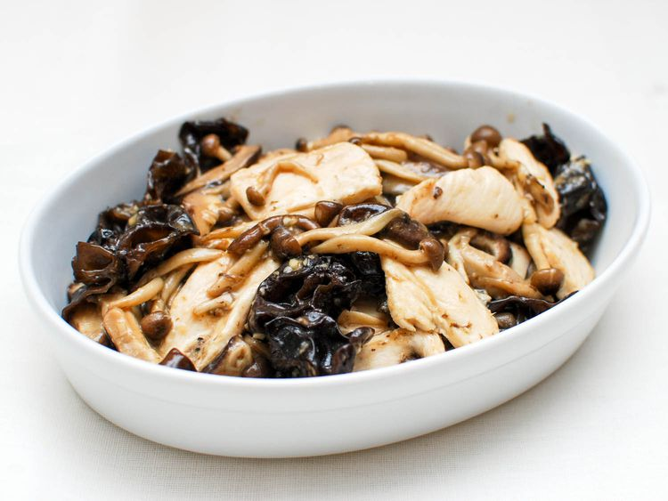

Description
Today's recipe features strips of chicken stir-fried with a
mixture of fresh and dried mushrooms, along with a sauce
made from soy and oyster sauces. The crunchy bite of the
rehydrated dried wood ear mushrooms, which you can find in
most Asian markets, adds a nice texture to the dish.
(They are great in other stir-fries as well and also in
these delicious pan-fried vegetable dumplings.) When using
oyster sauce, a little goes a long way, so be careful not to
pour out too much at once.
Ingredients
For the Velveted Chicken:
- 1 tablespoon egg white
- 2 teaspoons cornstarch
- 2 teaspoons Chinese rice wine or sake
- 1/4 teaspoon kosher salt
- 1/2 pound chicken breast, sliced 1/8 inch thick
- 6 cups water
- 1 teaspoon vegatable, canola, or peanut oil
For the Sauce and Stir-Fry:
- 1 teaspoon cornstarch
- 1 teaspoon sesame oil
- 2 teaspoons oyster sauce
- 1 teaspoon soy sauce
- 1 medium clove garlic, finely minced
- 2 tablespoons vegatable, canola, or
peanut oil, divided
- 1/2 pound mixed mushrooms, such as
cremini, shiitake, enoki, and/or
oyster, sliced about 1/4 inch thick
- 1.4 cup dried wood ear mushroom,
rehydrated in warm water for 15
minutes, then drained and large pieces
halved
- Cooked white rice, for serving
Steps
- For the Velveted Chicken:
In a small bowl, thoroughly combine egg white,
cornstarch, rice wine, and salt. Place
chicken in a bowl and add cornstarch mixture,
tossing to combine. Refrigerate for 30 minutes.
- Fill a wok with water and bring to a boil,
then add oil. Add chicken and, separating pieces
with chopsticks or a spatula, cook until chicken
is white outside but still raw within, about
40 seconds. Drain chicken in a colander and
shake off excess water. Wipe wok clean and dry.
- For Sauce and Stir-Fry In a small
bowl, mix together cornstarch, sesame oil,
oyster sauce, soy sauce, garlic, and water.
- Heat 1 tablespoon vegetable oil in wok over high
heat until smoking. Add fresh mixed mushrooms
and season with salt. Cook, stirring and
tossing, until mushrooms have released their
water, about 3 minutes. Add rehydrated wood
ear mushrooms and cook until mushrooms begin
to brown, about 5 minutes. Transfer mushroom
to a plate and wipe out wok.
- Heat remaining 1 tablespoon vegetable oil
in wok over high heat until smoking. Add
chicken and stir-fry until chicken is almost
cooked through, about 2 minutes. Return
mushrooms to wok and stir to combine with
chicken. Stir sauce add to the wok, tossing,
until sauce thickens, about 1 minute.
Transfer to a platter and serve with white rice.